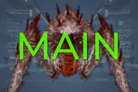
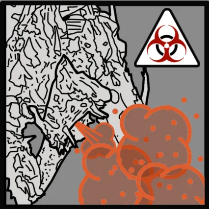
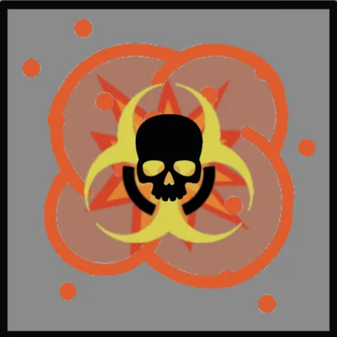

Spore Burst 吐酸泰坦
Spore Burst Bile Titan
基本信息
描述
A mutated 变体 of the 吐酸泰坦 with a potent bile spew capable of buffing nearby 敌人.
阵营
孢裂变种
最低难度
体型级别
庞大
属性
生命值
7,000
火焰伤害倍率
硬直阈值
技术信息
游戏版本
the Spore Burst 吐酸泰坦 is a 
 Spore Burst Strain 变体 of the 吐酸泰坦 that can knock over 绝地潜兵 with torrents of regurgitated spores, and can use its hulking legs to instantly crush 绝地潜兵.
Spore Burst Strain 变体 of the 吐酸泰坦 that can knock over 绝地潜兵 with torrents of regurgitated spores, and can use its hulking legs to instantly crush 绝地潜兵.
生成[edit | edit 来源]
Spore Burst Bile Titans can be first found on  困难, replacing Bile Titans on planets invaded by the
困难, replacing Bile Titans on planets invaded by the 
 Spore Burst Strain 作为……的任务目标 消除 Bile Titans 任务.
Spore Burst Strain 作为……的任务目标 消除 Bile Titans 任务.
Starting on  极难, Spore Burst Bile Titans can spawn from Bug 突破 and can be found patrolling the map on their own.
极难, Spore Burst Bile Titans can spawn from Bug 突破 and can be found patrolling the map on their own.
Starting on  自杀任务, Spore Burst Bile Titans can be found guarding certain 重型 Bug Nests layouts, and
自杀任务, Spore Burst Bile Titans can be found guarding certain 重型 Bug Nests layouts, and  超级绝地潜兵难度的超大型巢穴；这些巢穴还可能包含一个 虫穴 that Spore Burst Bile Titans can spawn from.
超级绝地潜兵难度的超大型巢穴；这些巢穴还可能包含一个 虫穴 that Spore Burst Bile Titans can spawn from.
行为[edit | edit 来源]
Spore Burst Bile Titans behave identically to 自然 Bile Titans with the exception of its attacking, trading off its 腐蚀 bile spew with a powerful spewing of Spores.
Said Spore Spew will cause 绝地潜兵 not wearing 护甲 with the Rock Solid 被动 to be ragdolled on hit, as well as leaving a vision-blocking cloud of spores on impact that 增加 the 速度 of other nearby Spore Burst 终结族.
结构解析[edit | edit 来源]
| 部件名称 | 生命值1 | 护甲值2 | 耐久2 | 主血量占比3 | 溢出上限4 | 构造5 | 致命 | ExDR6 | |
|---|---|---|---|---|---|---|---|---|---|
| Main | 7,000 |  |
100% | - | Yes | None | Yes | 50% | |
| Head | 2,500 | 95% | 100% | No | None | Yes | 50% | ||
| Torso 护甲(2) |
1,500 | 100% | 100% | No | None | No | 50% | ||
| Inner Flesh |
Main | 70% | 100% | Yes | None | Yes | 50% | ||
| Butt 护甲 |
3,500 | 100% | 100% | Yes | None | Yes | 50% | ||
| Upper Sac | 1,000 | 100% | 100% | Yes | None | No | 50% | ||
| Lower Sac | 1,000 | 100% | 100% | Yes | None | No | 50% | ||
| Underside | 4,000 | 80% | 60% | No | None | Yes | 0% | ||
| Claws (2) | 1,000 | 0% | 100% | No | None | No | 50% | ||
| Leg 护甲(12) |
1,000 | 100% | 100% | No | None | No | 50% | ||
| 左前 腿部血肉 |
2,000 | 100% | 100% | No | 1,500 [0/秒] | Yes | 50% | ||
| Leg Flesh (3) | 2,000 | 100% | 100% | No | 2,000 [0/秒] | Yes | 50% |
Disclaimer: Each highlighted part with a count has its own 生命值. Parts without a count share 生命值 pools.
1) Parts with their HP listed as "Main" do not have their own individual 生命值. All 造成伤害 to these parts is transferred to the enemy's 主生命值 pool.
2) Refer to 护甲 values and enemy 耐久度 as defined in 伤害 for more information.
3) 造成伤害 to a part will also be transferred in part or in full to 主生命值. If set to 0%, no 伤害 is transferred.
4) If set to "Yes", 伤害 transferred 对主血量 is capped by the combined 生命值 and 构造 of the part.
5) 构造 acts as a secondary 生命池 that, once Main or limb 生命值 has been depleted, may decay. The first number is the total 构造 and the second is the 衰退速率. If set to 0/s there is no decay and the 构造 behaves as extra 生命值.
6) ExDR means 爆炸 伤害抗性, and can 射程 from 0 to 100%. If set to 100%, the limb cannot take 爆炸伤害; The 爆炸伤害 will instead 目标 Main. Refer to 伤害 for more information.
- Note: This 机械师, known as Affected By 爆炸 can only occur once per 爆炸, regardless of 100% ExDR parts hit, and the 爆炸's 护甲穿透 must match or exceed 主体护甲 to deal 伤害 对主血量. However, if the same 爆炸 has already damaged Main, this 机械师 will not trigger.
武器配置[edit | edit 来源]
Mycotic Surge

Its 胃 cavity now wholly producing vile hormonal spores, Bile Titans of the Spore Burst Strain are capable of regurgitating monumental amounts of concentrated spore clouds with such force that they can even knock down human-sized targets. These spores also 强化 the 速度 of the 吐酸泰坦's 终结族 allies.
| 属性 | Value | |
|---|---|---|
| 范围效果 | 15爆炸 | |
| 2.25m | ||
| 6m | ||
| 2.5m | ||
| 4/3/4 | ||
（1.5倍伤害对 外骨骼机甲) (3.0x 伤害 To Bastion) | ||
| 5/5/5/0（投射物） | ||
| 2秒（Windup Time） 5秒（喷吐时间） 11秒（技能冷却） | ||
| ↔[500.00] ↕[250.00] | ||
| 10（撞击），0（溅射） | ||
| 20 (Impact), 25 (溅射) (溅射 布娃娃) | ||
| 10（撞击），15（溅射） | ||
灾变猛击

The Spore Burst 吐酸泰坦 is also capable of crushing whatever is before it with its multi-ton "pikes", impaling and skewering exos, cars and even tanks and outright obliterating anything 更小.
| 属性 | Value | |
|---|---|---|
| 1,000近战伤害 1,000耐久伤害 | ||
| 范围效果 | 0爆炸 | |
| 1m | ||
| 2.5m | ||
| 3m | ||
| 3/2/3 | ||
(3.0x 伤害 To Bastion) | ||
| 7/0/0/0 | ||
| 近战 | ||
| 近战 | ||
| 40（撞击），0（范围） | ||
| 60（撞击），120（范围） （两者均布娃娃） | ||
| 10（撞击），100（范围） | ||
Death Throes

Upon death, Spore Burst Bile Titans will suddenly and violently 爆炸 with 巨大 force, showering the area with its 腐蚀 hormonal spores, harming those nearby and ensuring its foes will be weakened and its allies hastened even after dying.
| 属性 | Value | |
|---|---|---|
| N/A | ||
| 范围效果 | 70爆炸 | |
| 10m | ||
| 17m | ||
| 22m | ||
| 6/5/6 | ||
（1.5倍伤害对 外骨骼机甲) (3.0x 伤害 To Bastion) 3/秒酸液每秒伤害（4.0秒） （通过爆炸伤害） | ||
| 1/1/1/0（酸灼） | ||
| 死亡爆炸 | ||
| 死亡爆炸 | ||
| 0 | ||
| 25 (布娃娃) | ||
| 15 | ||
战术信息[edit | edit 来源]
Spore Burst Strain Specific[edit | edit 来源]
- The Spore Burst 吐酸泰坦’s bile-spewing 攻击 leaves spores on the ground that disrupt vision and buff other nearby Spore Burst 终结族.
- When entering a cloud of spores (created by another Spore Burst 终结族’s death or through the Spore Burst 吐酸泰坦’s bile spew), Spore Burst 终结族 will gain a significant 增加 in 速度, allowing them to close the gap on 绝地潜兵.
- The Spore Burst 吐酸泰坦 deals far less 伤害 than the regular 吐酸泰坦 in its spew 攻击, posing little direct 威胁 in terms of 伤害. Although 绝地潜兵 ragdolled by it will likely be 易受 攻击 from other 终结族, the Bastion and other 载具 受益 greatly from this 已降低 伤害.
- Additionally, its bile-spewing 攻击 has a much higher 硬直力度, capable of easily ragdolling 绝地潜兵. This can be prevented by wearing 护甲 with the Rock Solid 被动技能。
- Spore Burst Bile Titans are slightly more 耐久 than their 标准 counterpart, with 500 more 主生命值 (7,000 vs 6,500), 1,000 more 头部生命值 (2,500 vs 1,500) and 250 more bile sac 生命值 (750 vs 1,000).
- This means that the EAT-17 消耗性反坦克武器 和 LAS-99 类星体加农炮 will not kill the Spore Burst 吐酸泰坦 in a 单发. However, the GR-8 无后坐力炮 和 FAF-14 Spear still will.
- Destroying a Spore Burst 吐酸泰坦's sacs is especially 重要 compared to its 标准 变体, as this prevents it from buffing other nearby Spore Burst 终结族.
将军[edit | edit 来源]
- 使用
 重型 护甲 and 庞大 伤害, Spore Burst Bile Titans are one of the most 危险 终结族 that 绝地潜兵们将面对的，需要团队协作和/或强力 战略配备. 绝地潜兵 are advised to 维护 a safe 距离 and engage Spore Burst Bile Titans with 进攻型 战略配备.
重型 护甲 and 庞大 伤害, Spore Burst Bile Titans are one of the most 危险 终结族 that 绝地潜兵们将面对的，需要团队协作和/或强力 战略配备. 绝地潜兵 are advised to 维护 a safe 距离 and engage Spore Burst Bile Titans with 进攻型 战略配备.
- 进攻型战略配备，例如 轨道炮攻击, 轨道精准攻击, Eagle 110mm 火箭巢，以及 Eagle 500kg Bomb are all capable of killing Spore Burst Bile Titans with one use, but this can vary due to positioning.
- 如果有，一个 绝地喷射舱 can deal significant 伤害 to a Spore Burst 吐酸泰坦. The Power Steering 模块可以大幅提高落在泰坦上的几率，因为直接落在身体或头部上可能很难。
- Destroying a Spore Burst 吐酸泰坦's sacs will prevent it from using spew 攻击, instead engaging 绝地潜兵 only with its legs.
- Spore Burst Bile Titans are 免疫 对眩晕和混乱效果免疫。但毒气持续伤害仍然有效。
- A Spore Burst 吐酸泰坦's death ragdoll can potentially crush 绝地潜兵 underneath it, and its legs may swing around widely, killing 绝地潜兵 that come into 联络 with it, as well as other 终结族 including Impalers and Chargers.
- Ironically, Spore Burst 吐酸泰坦 bodies have sufficient 爆破 force to 摧毁 吐酸泰坦 虫洞.
变体[edit | edit 来源]
图集[edit | edit 来源]
- The teaser for the Spore Burst 吐酸泰坦 posted by the 官员 绝地潜兵 2 Twitter 账户.[1]
- Spore Burst 吐酸泰坦's Mycotic Surge 能力
变更历史[edit | edit 来源]
补丁
描述
1.006.300
2026-06-16
1.006.202
2026-04-28
Changes
- Added to the game.
参考[edit | edit 来源]
装甲兵 • Brawler • 机械统帅 • Rocket Raider • 特攻 Raider • Marauder • MG Raider • 狂暴者 • 蹂躏者 • Rocket 蹂躏者 • 重型 蹂躏者 • 侦察纵步者 • Reinforced 侦察纵步者 • Hulk Obliterator • Hulk Scorcher • Hulk Bruiser • War Strider • Annihilator Tank • Shredder Tank • Barrager Tank • 炮舰 • 运输舰 • 移动工厂
防空 阵地 • 机器人制造厂 • 机器人 MG 阵地 • 机器人哨站 • Bulk 构筑者 • Cannon Turret • 摧毁 广播 网络 • 探测器 Tower • Enemy Bio-Processors • Erase 恐怖分子 Memorials • 炮舰 设施 • 迫击炮台 • 破坏 Air Base • 战略配备干扰器 • Bunker Turret